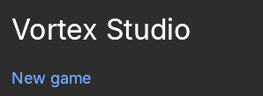
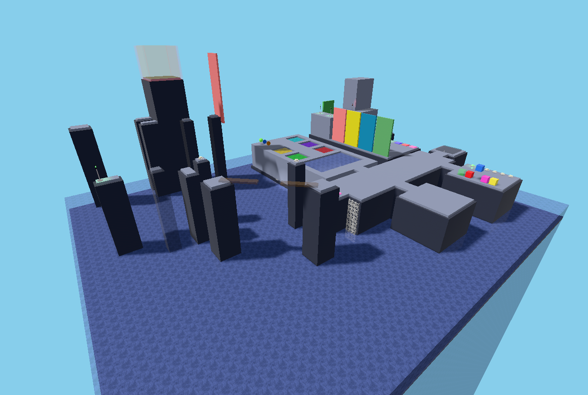
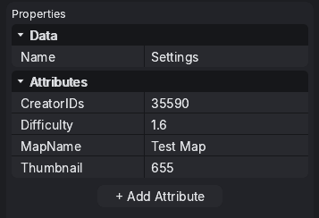
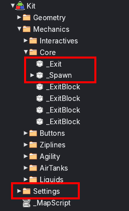
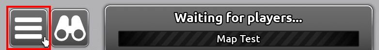
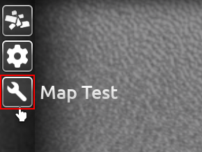
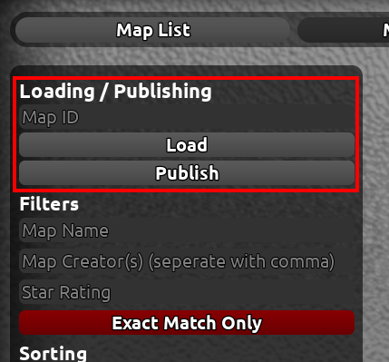
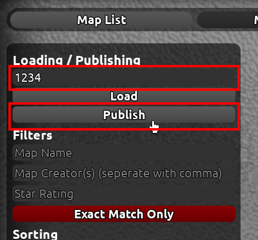

Getting Started
Welcome to Flood Insanity map making! This page will guide you through installation of the Map Development Kit, and how to publish your map for others to discover it.
Getting the Map Kit
Getting the Map Kit is very simple. Just follow the basic instructions, and hope nothing blows up along the way, yeah?
What you need:
- The Map Development Kit (linked below)
- Vortex Studio (v0.8+)
Instructions:
- Get the map development kit.
Get the Map Development Kit - Open up the place on Vortex Studio.
- That's it. Yay!


Settings
Main Page: Settings
The settings folder includes all the information Flood Insanity needs about your map. The name, creators, music and lighting all apply into this folder. For more information, go to the main page linked above.

Pre-Publishing
Before publishing to the Map Test Place, you need to make sure you have _Spawn, _Exit and Settings in your map, or else the publish will fail. This is case-sensitive.

Publishing Your Map
To publish your map, you must have your model marked for sale on your account. This is so the auto-publisher can get the model and allow it to be loaded into the place.
Instructions:
- Open the Map Test Place Flood Insanity Map Test Place
- Once loaded in, make your way to the main menu.
- Select the "Map Test" tab on the left bar. (The wrench icon)
- You should now see the Map Test panel. The publishing section is on the top left.
- Type in the Map's model ID where it says "Map ID", and click "Publish".
- The publish button should now prompt for you to wait. The game automatically checks for errors within the map.
- "Error!" - Check the console for what went wrong. Look at the list of errors in the next section for more information.
- "Success!" - The map has been successfully published. The text box should now be replaced with your new map's ID, which you can now load and play!




Errors
- "Publishing Error 1 - This map is not in the correct format. Are you sure you have _Spawn, _Exit, and Settings parented?"
- Your map does not contain the _Spawn or _Exit parts, and/or the Settings folder.
- "Publishing Error 2 - Read error. Are you sure this is a model?"
- The submitted item is not a model.
- "Publishing Error 3 - This map has already been published"
- The submitted map has already been published to the game.
- "Publishing Error 4 - Invalid ID. Did you make a typo?"
- The submitted ID is not a valid ID. Either including letters or symbols. Or the item simply does not exist.